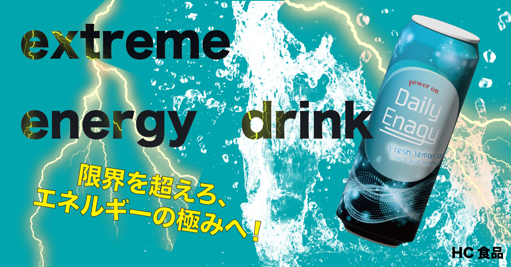
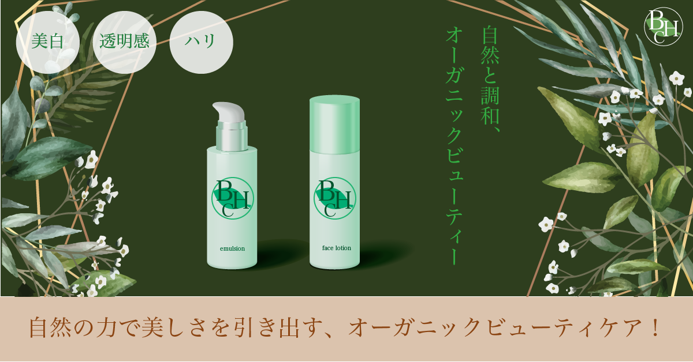
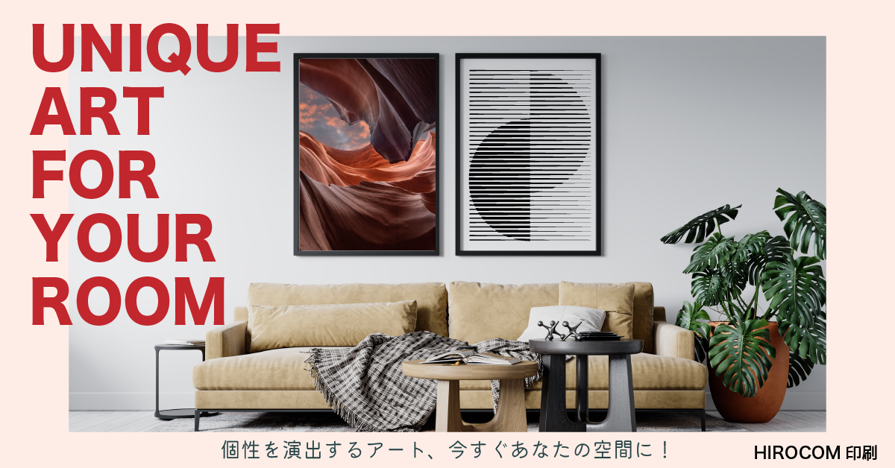

エナジードリンクバナー
学校で提供された素材を使用し、任意課題として制作したエナジードリンクのバナー広告です。 10代の若年層をターゲットに、稲妻や水しぶきのビジュアルで“覚醒感”と“爽快感”を表現しました。 視認性を高めるため大胆なタイポグラフィを採用し、強いコントラストでインパクトのある構成に仕上げています。
コスメバナー
オーガニック志向の女性を想定し、落ち着きのあるダークグリーンをベースに制作しました。 背景や装飾に植物を配置することで「自然との調和」というコンセプトを視覚化しています。 文字情報は余白を活かし、上品で信頼感のある印象に仕上げました。